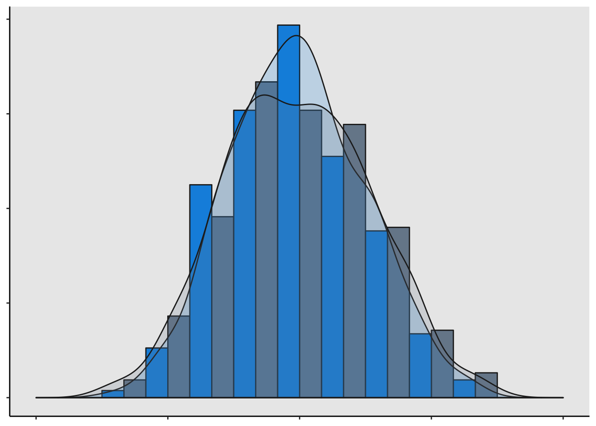
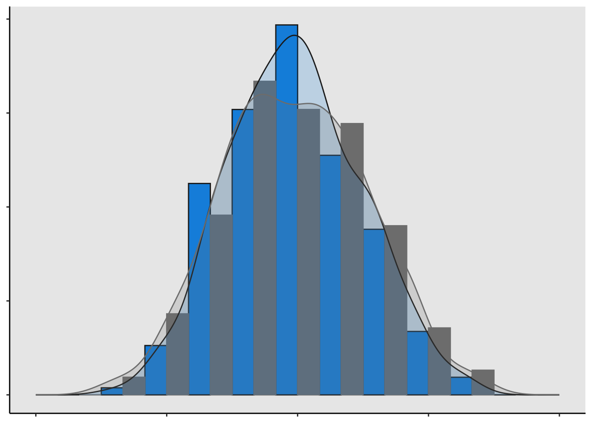

When I first started creating this website (in WordPress), I thought it would be cool have have my own logo. Why not, right? I figured I’d go super nerdy and have a cool histogram plot with a density curve through it. I had just finished reading Hadley Wickham’s ggplot2 book and I was excited to put some of those newly learned skills to use.
First off, I’m not a design guy (if you can’t tell already), but I had a vision of this plot and I just went with it. After making the basic design, I couldn’t figure out how to get spaces between the bars in a ggplot2 histogram. After searching everywhere, the best advice I got was, “Histograms don’t have spaces between them, so why would you want them?”
Then it dawned on me that I could plot two histograms, and then set their position to dodge and make one of the histograms invisible. So first, let’s plot two histograms:
rm(list = ls()) # Clear workspace
library(ggplot2) # Load ggplot2
set.seed(14) # Set seed for reproducible example
samplesA <- 400 # 400 samples in the distribution
# Create dataframe for plotting
logoData <- data.frame(dist = rep(c('A', 'B'), each = samplesA),
x = rnorm(2*samplesA))
# Logo plot
ggplot(logoData, aes(x, fill = dist, colour = dist)) +
geom_histogram(aes(y = ..density..),
position = 'dodge',
bins = 13) +
geom_density(alpha = 1/5) +
scale_fill_manual(values = c('#1191e0', 'lightslategrey')) +
scale_color_manual(values = c('#222222', '#222222')) +
xlim(-4 , 4) +
theme_classic() +
theme(axis.text.x = element_blank(),
axis.text.y = element_blank(),
axis.title = element_blank(),
legend.position = 'none',
panel.background = element_rect(fill = '#eaeaea'))
Now, let’s make one of the histograms invisible by setting its fill and color to NA, giving the illusion that there is only one histogram plotted:
ggplot(logoData, aes(x, fill = dist, colour = dist)) +
geom_histogram(aes(y = ..density..),
position = 'dodge',
bins = 13) +
geom_density(alpha = 1/5) +
scale_fill_manual(values = c('#1191e0', NA)) + # Setting fill to NA
scale_color_manual(values = c('#222222', NA)) + # Setting color to NA
xlim(-4 , 4) +
theme_classic() +
theme(axis.text.x = element_blank(),
axis.text.y = element_blank(),
axis.title = element_blank(),
legend.position = 'none',
panel.background = element_rect(fill = '#eaeaea'))
Now we are left with a single histogram density plot with spaces between the bars. However, when I tried to make this my website logo, I couldn’t figure out a way to get a high resolution image at 100 x 100 pixels. Instead, my brother made me a sweet bar graph with hockey sticks through it in Photoshop! Either way, through this journey I was able to come up with a solution to having spaces between histogram bars in ggplot2. Hopefully this is useful to someone!